PC and Counter-Strike 2 Optimization Guide
Dark Mode for this page is ON
This guide is created and assembled by The Smackers for playing Counter-Strike 2, follow this guide at your own risk.
We do not provide support or help for this guide. Don't attempt anything in this guide if you can't follow the steps exactly.
Windows 11 Preparation
Nothing special/different in Windows 11 so same practices before still apply like the below tips. A clean install is always better than updating to Windows 11
Backup all your data elsewhere always and enable System Restore and create a restore point after a fresh install or before completing this guide, just in case something unexpected happens
- Check motherboard website for BIOS updates and apply a fairly recent stable one
- Check in BIOS utility if XMP settings are (still) applied after update to Windows 11
- Your Windows drive must be formatted GPT not MBR, yours probably is good but this video shows you how to check
- If you are using BitLocker Drive encryption you must research how to safely do all of the above on your own
Windows 11 Checklist
- Install and update Windows 11
- Now Make sure Game Mode is enabled
- Now Make sure hardware accelerated gpu scheduling and game optimizations is enabled
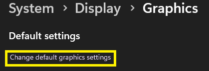
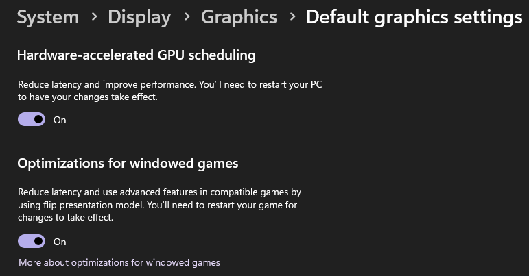
- Now Check Nvidia control panel, click Manage 3d Settings, ensure that Preferred refresh rate is set to Highest available and Power management mode is set to Prefer maximum performance and click Apply
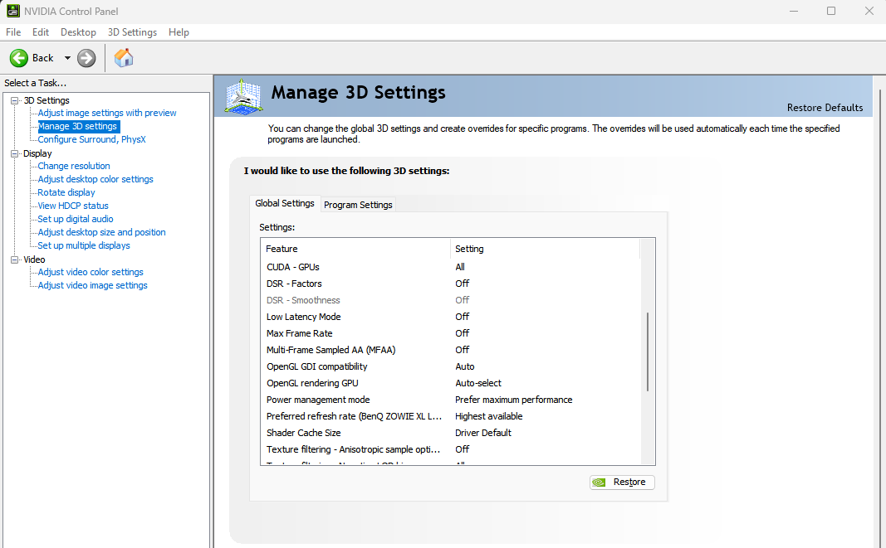
- Now Click Windows Search Icon and type control panel, hit Enter, click Power Options if you're on a Desktop PC change power plan to either High Performance or Ultimate Performance
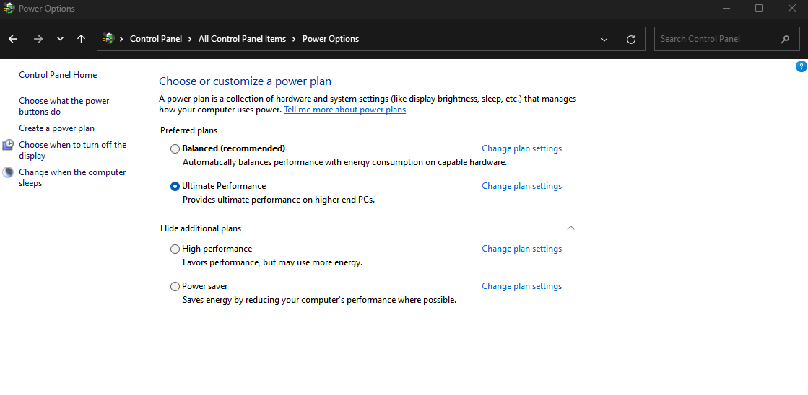
Windows 11 Optimization
- Open Task Manager, click Startup apps and set all apps to disabled unless actually want them starting with Windows
- Open Task Manager, click Processes, compare to this image of how yours should look after
- Open Windows Settings, click Gaming -> Xbox Game Bar and turn it Off
- Open Windows Settings, click Apps -> Installed apps
- Now click the ellipsis (3 dots) on each Microsoft Corporation app that is not named "Runtime"
Click the dropdown for Let this app run in background and change to Never. Do this for all Microsoft Corporation apps except for Windows Security
- Restart Windows to complete
- Download and install DDU and start the program
- Copy the Options like the image below and then click Close
- Select your device type and choose NVIDIA or AMD GPU from the dropdown
- Click Clean and restart
- Your PC will restart after a couple of minutes be patient
- Download, install and open NVCleanstall
- Manually select a driver version and choose the latest 64 bit Desktop driver
- Click Next and click Next again
- Copy the settings like the images below on the Installation Tweaks screen then click Next (If you want GeForce Experience or ShadowPlay check those boxes)
- Click Next and then click Install and wait for the installation to complete
- Use AMD's installer and choose minimal or full
- Open and login to Faceit AC and see if it gives you a notice/warning to be able to play, you may get this warning
- If it gives warning, this video good to follow to see how they check if secure boot and/or TPM is setup/enabled/on
- If you have an updated BIOS and running/installing windows 11, the only thing I needed to do in my BIOS was turn CSM to disabled and make secure boot option set to Windows UEFI like the linked video at 5:26 as I have ASUS motherboard
- Also that video doesn't show it but your Windows drive must be formatted GPT not MBR, yours probably is good but this video shows you how to check
- If you are using BitLocker Drive encryption you must research how to safely do all of the above on your own
- Start the game you wish to play and then open the Task Manager and locate the process Gamebar Presence Writer
- Right click it and End the process and enjoy your game
- Intel CPU: 10th, 11th, 12th, 13th series and newer
- AMD CPU: AMD Motherboard: 300 series(bios update), 400, 500, 600 series and newer
- NVIDIA RTX 3000 series or newer
- AMD Radeon RX 5000 series or newer with unofficial patch: RX 500 series/Vega56,64/Radeon VII
- Download and extract the latest NVIDIA Profile Inspector (nvidiaProfileInspector.zip) to a folder you can find
- Open nvidiaProfileInspector and scroll down to section 5 - Common and change the 3 rBAR options like the image below
- Then click Apply Changes top right
- This profile that's saved is the Global Profile, if you wish to disable rBAR you can do it on a per game basis by clicking on the Profiles drop down at top left
- step 4
- step 2
- step 0
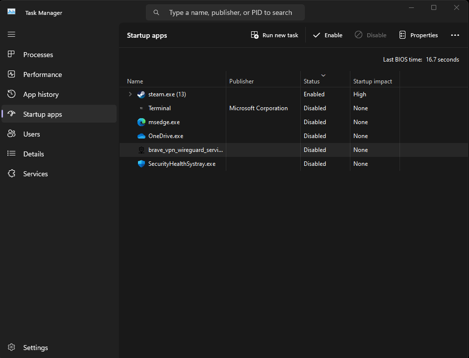
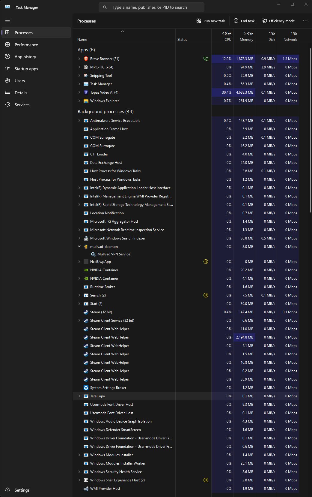
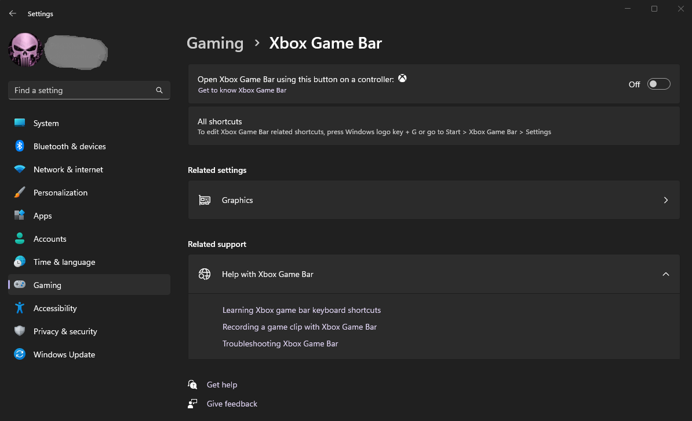
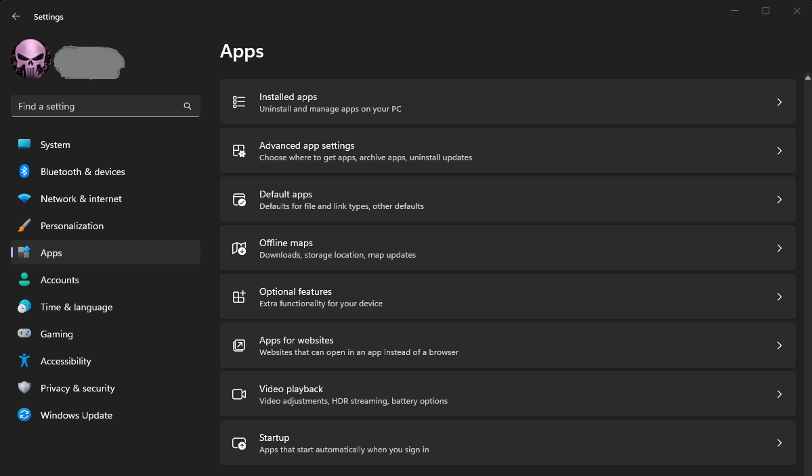
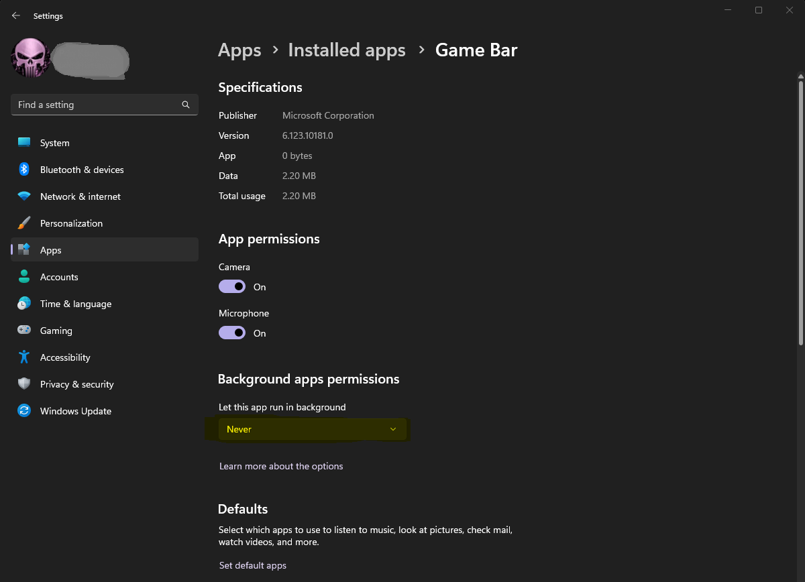
How to Install/Update NVIDIA GPU Drivers Correctly
Display Driver Uninstaller Setup (to cleanup any currently installed drivers)
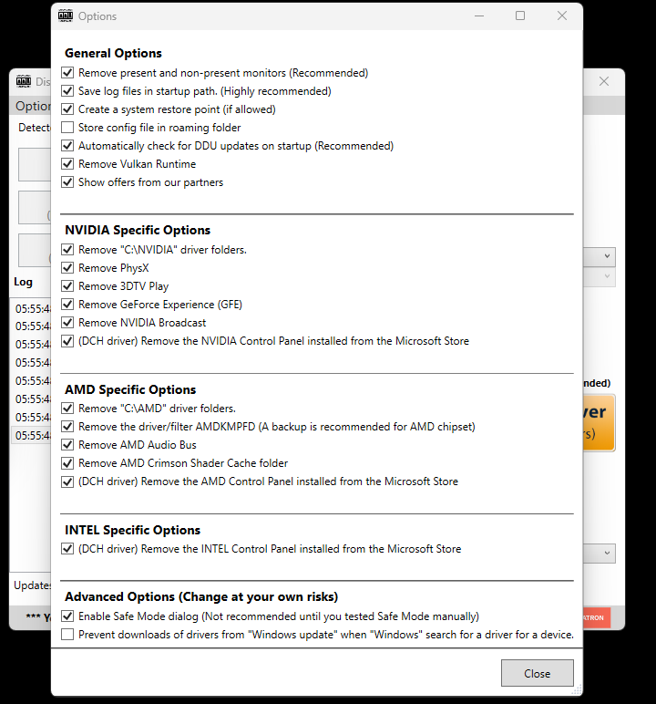
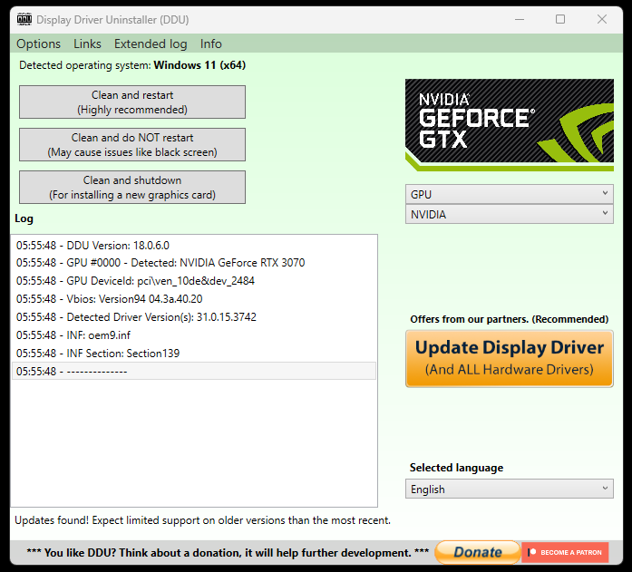
Clean Install of NVIDIA Driver using NVCleanstall
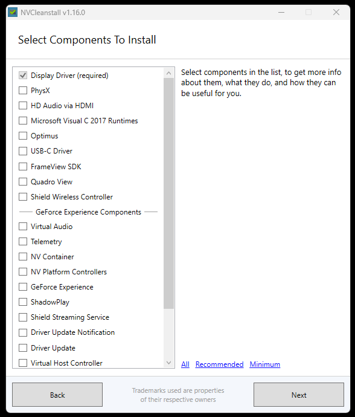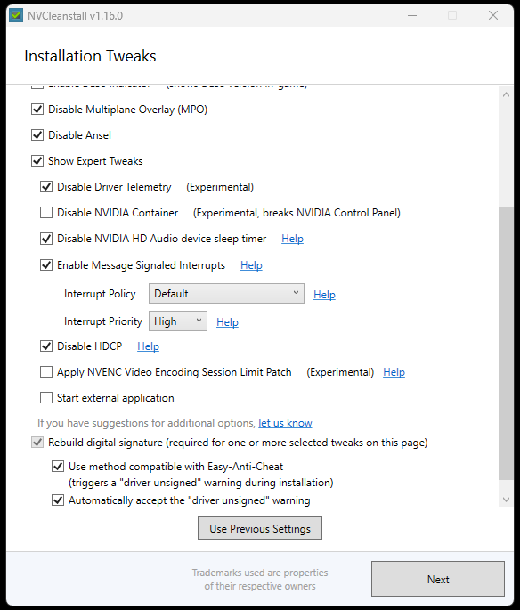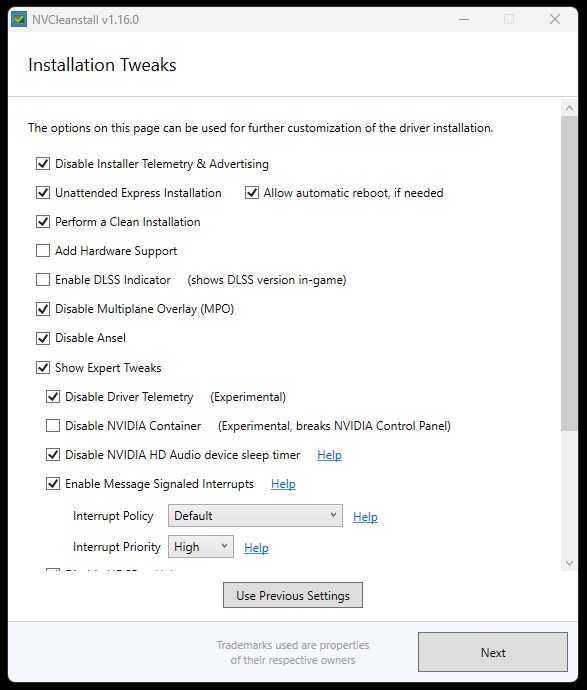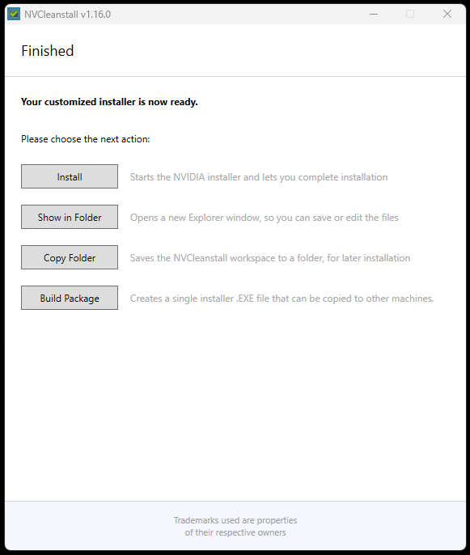
Install AMD Driver
Windows 10/11 Cleaning
1. Open Windows explorer (a folder) then highlight the text in address bar and delete it, then paste/type there:
C:\Windows\Temp
and hit Enter 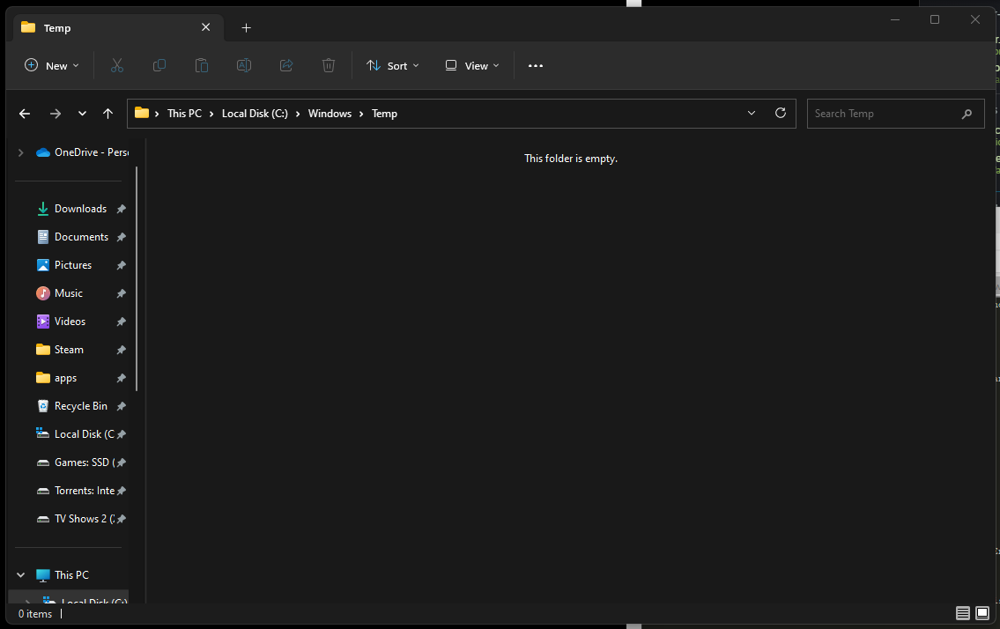
Select all files in the folder by pressing CTRL+A on your keyboard after selecting a random file
Press your Delete key
Do this for all current items box and click Skip
Some items may not delete, this is fine, move on
2. Open Windows explorer (a folder) again then highlight the text in address bar and delete it, then paste/type there:
%temp%
and hit Enter
Select all the files in the folder by pressing CTRL+A on your keyboard after selecting a random file
Press your Delete key
Tick the Do this for all current items box and click Skip
Some items may not delete, this is fine, move on
3. Disk cleanup
Click the search icon on task bar and type cleanmgr and hit Enter
Select C drive and press OK
Tick every box and press OK and then click Delete Files (Warning: this will delete your image and video thumbnails and anything in your Recycle Bin)
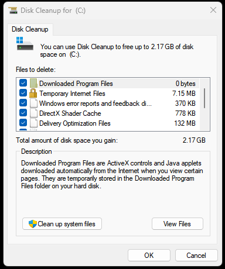
4. Clean up system files
Click the search icon on task bar and type cleanmgr and hit Enter
Click Clean up system files
Choose what you want to clean, most people do everything
Click OK this process might take a bit longer, be patient
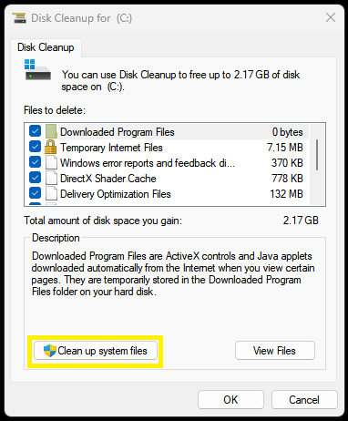
These things are needed for running Faceit AC or Valorant AC in Windows 11
Easy Fix for PC Stuttering in games (GameBar Presence Writer)
Enable Resizable BAR for NVIDIA 2000/3000/4000 Series GPU
If your system has these components or anything newer rBAR should be supported (google your cpu, motherboard and gpu to see if supported)
You should have a relatively up to date BIOS, back up your data as per usual
What is Resizable BAR?
All gaming PCs produce an on-screen image by way of the CPU processing data, textures, shaders and the like, from the graphics card’s frame buffer. Usually the CPU can only access this buffer in 256MB read blocks, which obviously isn’t very much when modern GPUs regularly have 8GB of video memory or much, much more.
Resizable BAR essentially makes the entirety of the graphics frame buffer accessible to the CPU at once; where it could once sip, it now guzzles. The idea is that once textures, shaders and geometry are loading in faster, games should run faster with higher frame rates.
This video explains everything if you wish to learn more.
Confirm Resize BAR state with NVIDIA Control Panel
1. Right click of mouse and select [NVIDIA Control Panel]
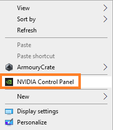
2. Click [Help] option and then click [System Information] option
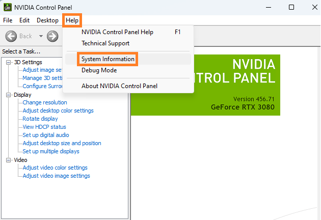
3. Resizable BAR show Yes means enabled
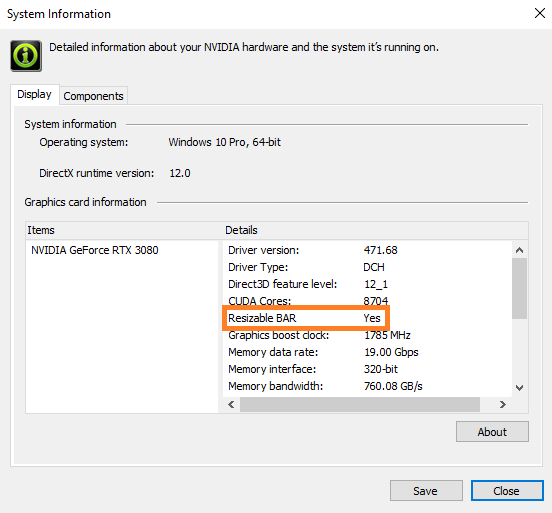
If it does not say Yes you must enable it in the BIOS.
Enabled Resize BAR in BIOS setup
(For example：TUF GAMING X570-PLUS(WI-FI))
1. Power on the system and press <delete> key to enter BIOS [EZ Mode]
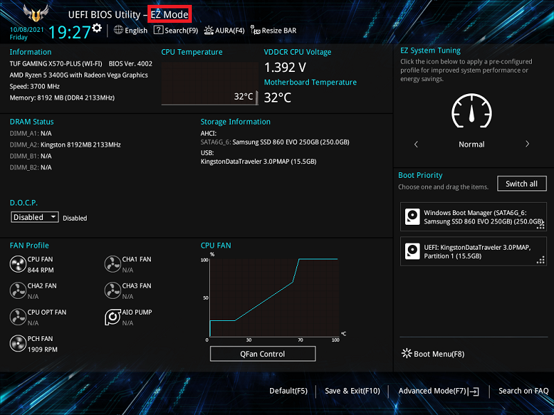
2. Click Resize BAR icon and set to [On]
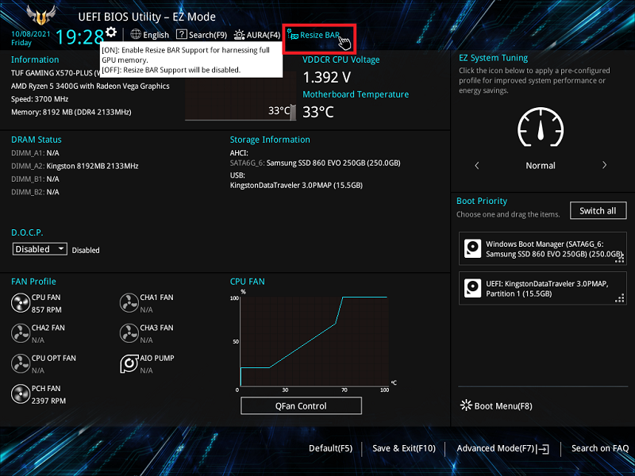
3. Press <F10> key and click <OK> , the system will auto reboot

4. Go back to step Confirm Resize BAR state with NVIDIA Control Panel and confirm it's set to Yes
You Must Also Now Enable Resize BAR using NVIDIA Profile Inspector
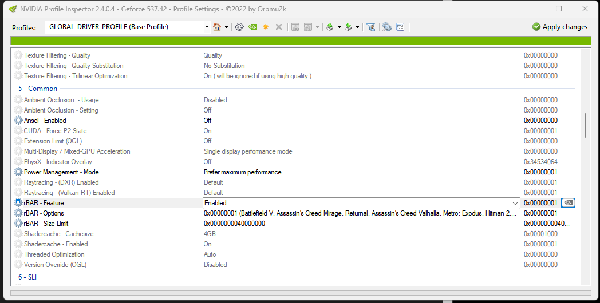
Enable Resizable BAR/Smart Access Memory for AMD Series GPU
Counter-Strike 2 Optimizations
Nothing different in CS2 compared to CS:GO other than there's no need to have any Launch Options (delete them if you have any) in Steam, so same practices before still apply like the below tips
If updated from CS:GO to CS2 an uninstall and install of CS2 is recommended, backup settings/binds/configs already elsewhere as uninstalling may remove them
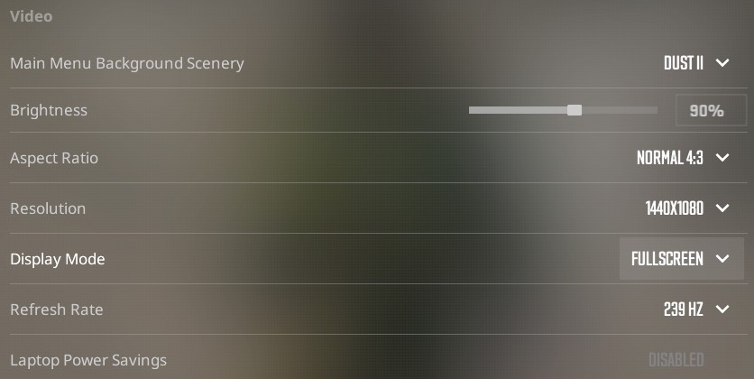
Make sure you set your maximum refresh rate of your display in the Video settings
Counter-Strike 2 Best Advanced Video Options
These are the settings I use
Boost Player Contrast: Enabled - Enable for best visibility (contrast on enemies) Wait for Vertical Sync: Disabled - Always disable vsync Multisampling Anti-Aliasing Mode: 2X MSAA - Lower equals best performance/personal preference Global Shadow Quality: High - High at least for best visibility (shadows on enemies) Model/Texture Detail: High - Lower equals best performance/personal preference Texture Filtering Mode: Bilinear - Lower equals best performance/personal preference Shader Detail: High - Lower equals best performance/personal preference Particle Detail: Low - Ambient Occlusion: Medium - Medium at least for best visibility (shadows on enemies) High Dynamic Range: Performance - FidelityFX Super Resolution: Disabled(Highest Quality) NVIDIA Reflex Low Latency: Enabled - See section right below (Enabled = less FPS+improved latency)
Counter-Strike 2 NVIDIA Low Latency
Here's a real good thread about NVIDIA Low Latency
There's a section called How to Measure Latency which can be used to figure out exactly if you should set this setting to Enabled, Enabled+Boost or Off.
Most players just set it to Enabled, if you have a consistent 300+ fps in the game you can probably set it to Off
Creating a Counter-Strike 2 autoexec.cfg file
What is an autoexec.cfg?
An autoexec is basically a personal config file that you put in the game's files with your own personal settings (such as crosshair settings, buy binds, sensitivy, and so on)
so that the game automatically loads these settings each time you start up the game.
Let's create an autoexec.cfg
In Windows search bar type: folder options and then hit Enter, click the View tab and then uncheck Hide extensions for known file types, click Apply and OK
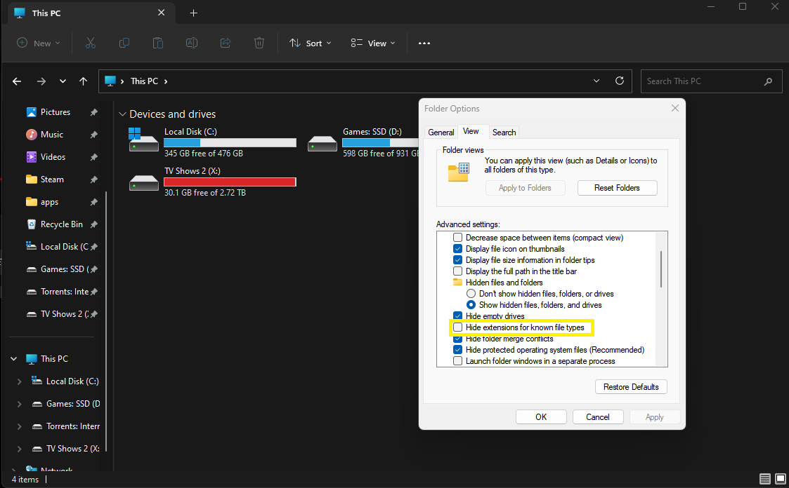
Now open Windows explorer (a folder) and browse to: C:\Program Files (x86)\Steam\steamapps\common\Counter-Strike Global Offensive\game\csgo\cfg
Right click and empty space in the folder and create a New -> Text Document, rename it to autoexec.cfg
Now open it with Notepad and put these lines: (this creates a config with a jump throw bound to the "n" key and which you may add anything you wish later)
// start
// enable the console
con_enable 1
// jump throw grenades bind
bind "n" +ju; +ja; +jum
alias +ju +jump
alias +ja -attack; -attack2
alias +jum -jump
// end
host_writeconfig
Ctrl+S to Save file, tnen Ctrl+W to Close Notepad
Add Counter-Strike 2 desubticked binds for autoexec.cfg file
Desubticked movement binds make movement feel more consistent and more like CS:GO, This link from Reddit is where the desubtick binds come from
Open your autoexec.cfg file with Notepad and put these lines anywhere above the line that says 'host_writeconfig' on it
and then Save file and start game: (If you don't use mouse wheel down for jump, you must change it to the key you use)
Test it out on an empty server before playing a game to make sure everything works
// default movement binds
// bind w +forward
// bind a +left
// bind d +right
// bind s +back
// bind CTRL +duck
// bind MWHEELDOWN +jump
// bind SPACE +jump
// de-subticked movement binds
bind w +forward_
bind a +left_
bind s +back_
bind d +right_
alias +forward_ +forward;+forward
alias -forward_ -forward;-forward;-forward
alias +left_ +left;+left
alias -left_ -left;-left;-left
alias +back_ +back;+back
alias -back_ -back;-back;-back
alias +right_ +right;+right
alias -right_ -right;-right;-right
// de-subticked crouch binds
bind CTRL +duck_
alias +duck_ +duck;+duck
alias -duck_ -duck;-duck;-duck
// de-subticked jump binds
bind MWHEELDOWN jomp
alias +jump_ +jump;+jump
alias -jump_ -jump;-jump;-jump
alias jomp +jump_;-jump_